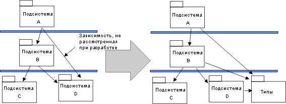
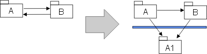

|
Создание структуры модели реализации
|
Цель
|
Создание структуры модели реализации.
|
Переход от 'области проектирования' к 'области реализации' начинается с копирования структуры модели проектирования в
модель реализации.
В состав пакетов проектирования входят подсистемы реализации, содержащие каталоги и файлы (Артефакт: Элемент
реализации), которые требуются для реализации соответствующих элементов проектирования. Преобразование модели
проектирования в модель реализации может быть изменено, поскольку каждая подсистема реализации связана с конкретным
уровнем архитектуры.
Создайте диаграмму структуры модели реализации (см. раздел Рекомендации: Диаграмма реализации).
|
Настройка подсистем реализации
|
Цель
|
Настройка структуры модели с учетом особенностей организации рабочей группы и ограничений языка реализации.
|
Определите, следует ли внести изменения в организацию подсистем. Для этого обратитесь к небольшим тактическим вопросам,
относящимся к среде реализации. Ниже приведены примеры таких тактических вопросов. Обратите внимание, что в случае
изменения организации подсистем реализации необходимо вернуться и обновить модель проектирования или разрешить различия
между моделями проектирования и реализации.
-
Организация группы разработки. Структура подсистем должна предусматривать параллельную работу нескольких
сотрудников или групп, ответственных за реализацию. Рекомендуется, чтобы за реализацию каждой подсистемы реализации
отвечала отдельная группа. Таким образом, большие подсистемы может потребоваться разделить на две части и выделить
для их реализации двух сотрудников или две группы (в особенности, если они находятся на разных циклах
компоновки/выпуска).
-
Объявления типов. Во время реализации вы можете обнаружить, что подсистема должна импортировать рабочие
продукты из других подсистем, поскольку в них объявлены требуемые типы. Как правило, такие ситуации возникают в
случае применения типизированных языков программирования, таких как C++, Java и Ada. Объявления типов рекомендуется
выделить в отдельную подсистему.
Пример
Путем переноса объявлений типов из подсистемы D в подсистему Типы можно обеспечить независимость подсистемы
A от изменений общедоступных (видимых) рабочих продуктов подсистемы D.

Объявления типов извлекаются из подсистемы D
.
-
Действующий код и системы компонентов. Может потребоваться внедрить действующий код, библиотеку многоразовых
компонентов или готовых продуктов. Если они не были смоделированы в ходе проектирования, следует добавить
подсистемы реализации.
-
Настройка зависимостей. Предположим, что подсистемы A и B связаны друг с другом с помощью зависимостей
импорта. Подсистему B требуется сделать менее зависимой от подсистемы A. Для этого необходимо извлечь из подсистемы
A рабочие продукты, импортируемые подсистемой В, и поместить их в новой подсистеме реализации А1 более низкого
уровня.

Рабочие продукты извлекаются из подсистемы A и переносятся в новую подсистему A1.
Теперь, когда подсистемы реализации не связаны один-к-одному с пакетами/подсистемами из модели проектирования, в модель
проектирования можно внести соответствующие изменения (если модель проектирования должна быть согласована с моделью
реализации) или отслеживать связи между моделями реализации и проектирования (например, с помощью зависимостей
трассируемости или реализации). Необходимость и описание такого преобразования определяются решением процесса, которое
описывается в Рабочий продукт: Рекомендации по проекту.
|
Определение зависимостей импорта для каждой подсистемы реализации
|
Цель
|
Определение зависимостей между системами.
|
Для каждой подсистемы следует определить, какие прочие подсистемы она должна импортировать. Эта задача применима ко
всему набору подсистемы; каждая подсистема на конкретном уровне может импортировать все подсистемы более низкого
уровня. Как правило, зависимости модели реализации и модели проектирования совпадают. Исключение составляет случай
изменения модели реализации (см. раздел Настройка подсистем реализации).
Представьте иерархическую структуру подсистем на диаграммах компонентов.
|
Выбор способа обработки исполняемых программ (и прочих производных объектов)
|
Исполняемые программы (и прочие производные объекты) создаются в результате применения процесса компоновки к одной или
нескольким подсистемам реализации или их отдельным компонентам. С логической точки зрения они принадлежат подсистеме
реализации. Однако архитектор программного обеспечения совместно с менеджером о конфигурации должен принять решение о
применении структуры конфигурации к модели реализации.
Для простоты выбора и добавления ссылок, в особенности в целях развертывания, по умолчанию рекомендуется задавать
отдельные элементы конфигурации, содержащие наборы допускающих развертывание исполняемых программ (список исполняемых
программ, а также узлов для их развертывания приведен в разделе Модель
развертывания). Таким образом, в простом случае каждой подсистеме реализации соответствует элемент конфигурации для
развертываемых исполняемых программ, а также элемент конфигурации, содержащий исходный код, применяемый для их
создания. Подсистему реализации можно представить с помощью составного элемента конфигурации, содержащего указанные
элементы конфигурации (и другие, например, тестовые ресурсы).
С точки зрения моделирования набор исполняемых программ, создаваемый в ходе компоновки, можно представить в качестве
объекта Рабочий продукт: Компиляция (пакет), входящего в состав связанной
подсистемы реализации (также пакет).
|
Выбор способа обработки тестовых ресурсов
|
Цель
|
Добавление тестовых рабочих продуктов в модели реализации.
|
В общем случае тестовые рабочие продукты и тестовые подсистемы рассматриваются в Rational Unified Process аналогично
другому программному обеспечению. Однако тестовые рабочие продукты и подсистемы не входят в состав развернутой системы
и зачастую не поставляются заказчику. Таким образом, по умолчанию рекомендуется синхронизировать тестовые ресурсы с
предметом тестирования (например, элемент реализации для полнофункционального тестирования, подсистема реализации для
теста интеграции, система для системного теста). Кроме того, тестовые ресурсы следует расположить, к примеру, в
отдельных каталогах, если хранилище проекта организовано в качестве набора или структуры каталогов. Отдельные тестовые
подсистемы (предназначенные для тестирования более высокого уровня по сравнению с полнофункциональным тестированием)
рассматриваются аналогично прочим подсистемам реализации - в качестве отдельных элементов конфигурации.
Для моделирования набор тестовых рабочих продуктов можно предоставить в качестве объекта Рабочий продукт: Подсистема реализации (пакет). Для
полнофункционального тестирования такая тестовая подсистема, как правило, содержится в связанной (проверенной)
подсистеме реализации. Архитектор программного обеспечения совместно с менеджером по конфигурации должен принять
решение, следует ли на этом уровне настраивать тестовые рабочие продукты вместе с тестируемыми элементами реализации
или в качестве отдельных элементов конфигурации. Тестовые подсистемы, предназначенные для теста интеграции и системного
теста, должны принадлежать одному уровню тестируемых подсистем реализации.
|
Обновление представления реализации
|
Цель
|
Обновление представления реализации документа архитектуры программного обеспечения.
|
Представление реализации описано в документе архитектуры программного обеспечения. В этом разделе
приведены диаграммы компоненты, на которых показана структура уровней и распределение подсистем реализации между этими
уровнями, а также зависимости импорта между подсистемами.
|
Оценка модели реализации
|